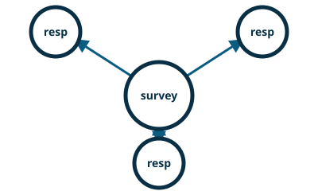

nng-rs / Rust pattern guide

SURVEYOR / RESPONDENT — Everybody Votes
SURVEYOR / RESPONDENT asks connected peers a question and collects their responses.
nng-rs is an independently maintained Rust binding for NNG. Its maintainers and release cycle are separate from the NNG core project.
This example is sourced from the project’s default branch. See the upstream example for its current history.
survey.rs
//! Survey (everybody votes) example.
//!
//! The surveyor pattern is used to send a timed survey out, with responses being individually
//! returned until the survey has expired. This pattern is useful for service discovery and voting
//! algorithms.
//!
//! This example was derived from [this NNG example][1].
//!
//! [1]: https://nanomsg.org/gettingstarted/nng/survey.html
use nng::{Error, Protocol, Socket};
use std::{convert::TryInto, env, process, str, time::SystemTime};
const DATE: &str = "DATE";
/// Entry point of the application.
pub fn main() -> Result<(), Error> {
let args: Vec<_> = env::args().take(4).collect();
match &args[..] {
[_, t, url] if t == "surveyor" => surveyor(url),
[_, t, url, name] if t == "respondent" => respondent(url, name),
_ => {
println!("Usage: pipeline surveyor|respondent <URL> <NAME> ...");
process::exit(1);
}
}
}
/// Surveyor socket.
fn surveyor(url: &str) -> Result<(), Error> {
let s = Socket::new(Protocol::Surveyor0)?;
s.listen(url)?;
loop {
println!("SURVEYOR: SENDING DATE SURVEY REQUEST");
s.send(DATE.as_bytes())?;
loop {
let msg = match s.recv() {
Ok(m) => m,
Err(Error::TimedOut) => break,
Err(e) => return Err(e),
};
let date = u64::from_le_bytes(msg[..].try_into().unwrap());
println!("SURVEYOR: RECEIVED \"{}\" SURVEY RESPONSE", date);
}
println!("SURVEYOR SURVEY COMPLETE");
}
}
/// Respondent socket.
fn respondent(url: &str, name: &str) -> Result<(), Error> {
let s = Socket::new(Protocol::Respondent0)?;
s.dial(url)?;
loop {
let mut msg = s.recv()?;
let survey = str::from_utf8(&msg).expect("invalid UTF-8");
println!(
"RESPONDENT ({}): RECEIVED \"{}\" SURVEY REQUEST",
name, survey
);
// Reuse the message to avoid allocation.
msg.clear();
let date = SystemTime::now()
.duration_since(SystemTime::UNIX_EPOCH)
.expect("system time is before Unix epoch")
.as_secs();
msg.push_back(&date.to_le_bytes());
println!("RESPONDENT ({}): SENDING \"{}\"", name, date);
s.send(msg)?;
}
}
Run it
# Set up once.
git clone --recurse-submodules https://github.com/nanomsg/nng-rs.git
cd nng-rs
# Run these in separate terminals from the checkout.
cargo run -p nng --example survey -- surveyor tcp://127.0.0.1:6006
cargo run -p nng --example survey -- respondent tcp://127.0.0.1:6006 alice